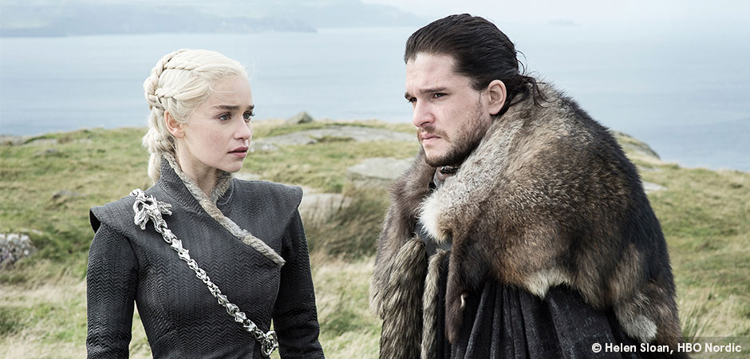

Ünlü Amerikan yazar George R.R. Martin’in 1991 yılında yazmaya başladığı ve 1996 yılında ‘A Game of Thrones’ adlı ilk kitabıyla yayınlanmaya başlanan “A Song of Ice and Fire” külliyatının popülaritesi 2010 yılına gelene kadar dünya çapında olsa da yalnızca fantastik eserlerle haşır neşir olan kemik bir kitleyle sınırlıydı. Ancak, 2010 yılında HBO kanalının yüksek bütçeli yapım olanaklarıyla televizyon sektörüne ilk kitaba uygun olarak Game of Thrones adıyla uyarlanan A Song of Ice and Fire serisi hem popülaritesini 7’den 70’e ulaşarak tüm dünyaya yayacak; hem de 2019 itibariyle bitmesine daha 2 kitap olan eserin geleceğini de tartışmaya açacak kadar sansasyon yaratacak bir çılgınlığın da kıvılcımlarını yakacaktı.
İlk sezonuna baş rollerinde Sean Bean, Lena Headey, Peter Dinklage ve Emilia Clarke gibi ünlü isimlerle başlayan dizi, yarattığı evrenin detaylı oluşuyla; karakterlerinin özgünlüğü ve onların sunuluş biçimleriyle, sinematografisiyle; şaşırtan kurgusuyla ve merak ettiren senaryosuyla ününün sınırlarını tahmin ettirecek bir potansiyel göstermişti. Dizi henüz ilk sezonunda olaylara daha ufacık bir başlangıç bile yapmış olsa da barındırdığı çok fazla ana karakter; her bir ana karakterin ayrı kurgusal çizgisi; bu ana karakterlere maceralarında eşlik eden yan karakterlerin de yan hikayelerini barındırması gibi detaylı bir senaryo taslağının güzel bir sinematografi ve harcamadan kaçmayan bir bütçeyle ekranlara dökülmesiyle izleyeni her anlamda tatmin eden şaşırtıcı, bir o kadar fantastik ve umut vaat eden bir yapımı kazanmış olduk.

Game of Thrones, tema olarak yalnızca fantastik bir yapım olarak nitelendirilmekten çok uzakta; birden fazla derinliği olan bir yapım. Fantastik ögeleri kurgusunun asıl teması olan güç ve siyaset başlıklarının içerisinde yalnızca anlatımı destekleyici; evrenini tamamlayıcı ve izleyicisine keyifli ve hayal gücünü genişletebilecek yardımcı olarak kullanan George R.R. Martin ve dolaylı olarak senaristler D.B. Weiss & D. Benioff, oldukça tatmin edici bir iş çıkarıyordu ve dizi ilerleyen sezonlarıyla birlikte her geçen bölümde daha da yükseliyor; arşa çıkıyor ve izleyicisini bu evrenin bir üyesi haline getiriyordu. Yayınlanan her bölümle bir önceki bölümde bıraktıkları tatminkar hissin devamını sağlıyorlar ve hikayelerini daha da dallandırıp budaklandırıyorlardı.